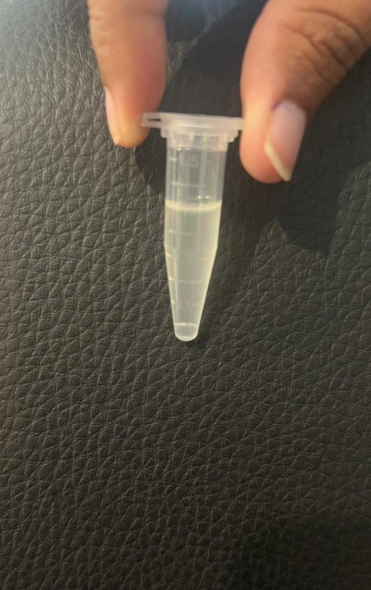
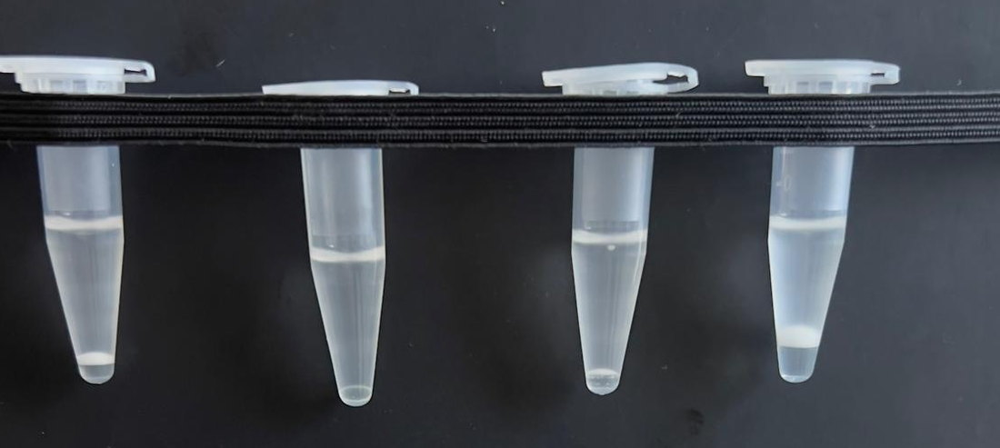

← All projects
Formulation science
Essential Oil-Based Emulsion for Anti-Lice Application
Experimental formulation development and comparative assessment of physical stability for a topical essential oil system.
Original research photograph · identifying details restricted
01 / Research objective
What was the question?
Explore formulation and processing approaches that could improve the physical stability of essential oil-based systems for a proposed anti-lice application.
02 / My role
What I contributed
- Assisted with preparing and processing experimental formulations.
- Conducted or supported comparative stability tests and physical observations.
- Compared formulation appearances and stability-related outcomes.
03 / Interpretation
Outcome & learning
Comparative evaluations identified processing conditions associated with improved observed physical stability; efficacy against lice was not established by these formulation tests.
Visual archive / approved excerpts
From the actual laboratory record.
A curated collection of original photographs. Crops conceal experimental labels; no measurements, treatment formulations or quantitative findings are made public.


Images are for evidence of research practice; they do not substitute for study data or published findings.